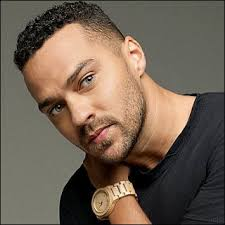

John Doe
I got into photography as a profession after moving to Kansas City from Nashville where I was pursuing a career in music. The relationships, stories, and experiences I've acquired from my lifestyle as a photographer are irreplaceable. In addition to shooting as an Associate Photographer with Paper Sun, I work extensively in the editorial and fashion world.